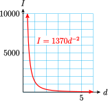
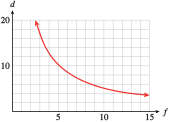

Section 6.1 Integer Exponents
You know that that a positive integer exponent tells us how many times its base occurs as a factor in an expression. For example,
What is the meaning of a negative exponent?
Subsection Negative Exponents
Study the list of powers of 2 shown in Table (a) and observe the pattern as we move up the list from bottom to top. Each time the exponent increases by 1 we multiply by another factor of 2. We can continue up the list as far as we like.

\(\hphantom{000000000000}\)a.
If we move back down the list, we divide by 2 at each step, until we get to the bottom of the list, \(2^{1} = 2\text{.}\)
What if we continue the list in the same way, dividing by 2 each time we decrease the exponent? The results are shown in Table (b).
As we continue to divide by 2, we generate fractions whose denominators are powers of 2. In particular,

\(\hphantom{000000000000}\)b.
Based on these observations, we make the following definitions.
Definition of Negative and Zero Exponents.
These definitions tell us that if the base \(a\) is not zero, then any number raised to the zero power is \(1\text{,}\) and that a negative exponent denotes a reciprocal.
Example 6.1.
\(\displaystyle 2^{-3} = \dfrac{1}{2^3}= \dfrac{1}{8}\)
\(\displaystyle 9x^{-2} = 9 \cdot \dfrac{1}{x^2}= \dfrac{9}{x^2}\)
Caution 6.2.
-
A negative exponent does not mean that the power is negative! For example,
\begin{equation*} 2^{-3}\ne -2^3 \end{equation*} -
In Example 6.1b, note that
\begin{equation*} 9x^{-2} \ne \frac{1}{9x^2} \end{equation*}The exponent, \(-2\text{,}\) applies only to the base \(x\text{,}\) not to \(9\text{.}\)
Notebook 6.3. QuickCheck 1.
Notebook 6.4. Practice 1.
In the next Example, we see how to evaluate expressions that contain negative exponents and how to solve equations involving negative exponents.
Example 6.5.
The body mass index, or BMI, is one measure of a person’s physical fitness. Your body mass index is defined by
where \(w\) is your weight in kilograms and \(h\) is your height in meters. The World Health Organization classifies a person as obese if his or her BMI is 25 or higher.
Calculate the BMI for a woman who is 1.625 meters (64 inches) tall and weighs 54 kilograms (120 pounds).
For a fixed weight, how does BMI vary with height?
The world’s heaviest athlete is the amateur sumo wrestler Emanuel Yarbrough, who weighs 319 kg (704 pounds). What height would Yarbrough have to be to have a BMI under 25?
-
We evaluate the formula to find
\begin{equation*} \text{BMI} = 54(1.625^{-2})= 54\left(\dfrac{1}{1.625^2}\right)= 20.45 \end{equation*} \(\text{BMI} = wh^{-2} = \dfrac{w}{h^2}\text{,}\) so BMI varies inversely with the square of height. That is, for a fixed weight, BMI decreases as height increases.
-
To find the height that gives a BMI of \(25\text{,}\) we solve the equation \(25 = 319h^{-2}\text{.}\) Note that the variable \(h\) appears in the denominator of a fraction, so we begin by clearing the denominator—in this case we multiply both sides of the equation by \(h^2\text{.}\)
\begin{align*} 25 \amp = \frac{319}{h^2} \amp\amp \blert{\text{Multiply both sides by }h^2.}\\ 25h^2 \amp = 319 \amp\amp \blert{\text{Divide both sides by }25.}\\ h^2 \amp = 12.76 \amp\amp \blert{\text{Extract square roots.}}\\ h \amp\approx 3.57 \end{align*}To have a BMI under 25, Yarbrough would have to be over 3.75 meters, or 11 feet 8 inches tall. (In fact, he is 6 feet 8 inches tall.)
Notebook 6.6. Practice 2.
Subsection Power Functions
The functions that describe direct and inverse variation are part of a larger family of functions called power functions.
Power Function.
A function of the form
where \(k\) and \(p\) are nonzero constants, is called a power function.
Examples of power functions are
In addition, the basic functions
which we studied in Chapter 5 can be written as
Their graphs are shown below. Note that power functions with negative exponents are undefined at zero.

Example 6.7.
Which of the following are power functions?
\(\displaystyle f(x) = \dfrac{1}{3}x^4 + 2\)
\(\displaystyle g(x) = \dfrac{1}{3x^4}\)
\(\displaystyle h(x) = \dfrac{x + 6}{x^3}\)
This is not a power function, because of the addition of the constant term.
We can write \(g(x) = \frac{1}{3}x^{-4}\text{,}\) so \(g\) is a power function.
This is not a power function, but it can be treated as the sum of two power functions, because \(h(x) = x^{-2} + 6x^{-3}\text{.}\)
Notebook 6.8. QuickCheck 2.
Notebook 6.9. Practice 3.
Most applications are concerned with positive variables only, so many models use only the portion of the graph in the first quadrant.
Example 6.10.
The intensity of the radiation from our Sun varies inversely with distance.
- Use a negative exponent to write a formula for the intensity \(I\) as a function of \(d,~I=f(d)\text{.}\)
- The planet Mercury is 0.387 AU (Astronomical Units) distant from the Sun, and the intensity of radiation at its surface is 9147 watts per square meter. Find the constant of proportionality in the formula for \(I\text{.}\)
- Graph \(I=f(d)\text{.}\)
- Earth is 1 AU from the sun. What is the intensity of the Sun's radiation at the surface of the Earth?
- The surface of Jupiter receives 50.63 watts per square meter of the Suns' radiation. How far is Jupiter from the Sun?
- If we use \(k\) for the constant of proportionality, then \(I=\dfrac{k}{d^2}\text{.}\) Rewriting this equation with a negative exponent gives \(I=kd^{-2}\text{.}\)
-
We substitute \(T=9147\) and \(d=0.387\) to obtain
\begin{align*} 9147 \amp = k(0.387)^{-2}\\ 9147 \amp = \dfrac{k}{(0.387)^2} \amp \amp \blert{\text{Multiply both sides by}~0.387^2.}\\ 1369.9 \amp = k \end{align*}Thus, \(I=f(d)=1370d^{-2}\text{.}\)
- We evaluate the function for several values of \(d\text{,}\) and use a calculator to obtain the graph shown. 
- We substitute \(d=1\) into the formula to obtain\begin{equation*} I=1370(1)^{-2} = 1370 \end{equation*}Earth receives 1370 watts/m\(^2\) of solar radiation.
-
We substitute \(I=\alert{50.63}\) into the formula, and solve for \(d\text{.}\)
\begin{align*} \alert{50.63} \amp = 1370d^{-2} = \dfrac{1370}{d^2} \amp \amp \blert{\text{Multiply both sides by}~d^2.}\\ 50.63d^2 \amp = 1370 \amp \amp \blert{\text{Divide both sides by 50.63.}}\\ d^2 \amp = \dfrac{1370}{50.63} = 27.059 \amp \amp \blert{\text{Extract roots.}}\\ d = \amp 5.202 \end{align*}Jupiter is 5.202 AU from the sun, or about 484 million miles.
The function \(I = \dfrac{k}{d^2}\) is an example of an inverse square law, because \(I\) varies inversely with the square of \(d\text{.}\) Such laws are fairly common in physics and its applications, because gravitational and other forces behave in this way. Here is another example of an inverse square law.
Notebook 6.11. Practice 4.
Subsection Working with Negative Exponents
The laws of exponents apply to all integer exponents, positive negative, and zero. When we allow negative exponents, we only need one version of the rule for computing quotients of powers, namely
For example, by applying this new version of the law we find
which is consistent with our previous version of the rule, \(\dfrac{x^2}{x^5} = \dfrac{1}{x^{5-2}} = \dfrac{1}{x^3}\)
For reference, we restate the laws of exponents below. The laws are valid for all integer exponents \(m\) and \(n\text{,}\) and for \(a,~b \not= 0\text{.}\)
Laws of Exponents.
\(\displaystyle \displaystyle{a^m\cdot a^n = a^{m+n}}\)
\(\displaystyle \displaystyle{\frac{a^m}{a^n}=a^{m-n}}\)
\(\displaystyle \displaystyle{\left(a^m\right)^n=a^{mn}}\)
\(\displaystyle \displaystyle{\left(ab\right)^n=a^n b^n}\)
\(\displaystyle \displaystyle{\left(\frac{a}{b}\right)^n=\frac{a^n}{b^n}}\)
Example 6.12.
You can check that each of the calculations in Example 6.12 is shorter when we use negative exponents instead of converting the expressions into algebraic fractions.
Notebook 6.13. Practice 5.
Caution 6.14.
The laws of exponents do not apply to sums or differences of powers. We can add or subtract like terms, that is, powers with the same exponent. For example,
but we cannot add or subtract terms with different exponents. Thus, for example,
In the opening table we saw that \(2^0 = 1\text{,}\) and in fact \(a^0 = 1\) as long as \(a \ne 0\text{.}\) Now we can see that this definition is consistent with the laws of exponents. The quotient of any (nonzero) number divided by itself is \(1\text{.}\) But by applying the second law of exponents, we also have
Zero as Exponent.
For example,
Notebook 6.15. QuickCheck 3.
Subsection Review of Scientific Notation
Scientists and engineers regularly encounter very large numbers such as,
(the mass of the earth in kilograms) and very small numbers such as
(the mass of a hydrogen atom in grams) in their work. These numbers are easier to use when expressed in scientific notation.
To Write a Number in Scientific Notation.
- Locate the decimal point so that there is exactly one nonzero digit to its left.
-
Count the number of places you moved the decimal point: this determines the power of 10.
- If the original number is greater than 10, the exponent is positive.
- If the original number is less than 1, the exponent is negative.
Example 6.16.
Write each number in scientific notation.
- \(\displaystyle 478,000\)
- \(\displaystyle 0.00032\)
- \begin{align*} 478,000 \amp = 4.78000 \times 10^5 \amp \amp \blert{\text{Move the decimal 5 places to the left.}}\\ \amp = 4.78 \times 10^5 \end{align*}
- \begin{align*} 0.00032 \amp = 00003.2 \times 10^{-4} \amp \amp \blert{\text{Move the decimal 4 places to the right.}} \end{align*}
Notebook 6.17. Practice 5.
Your calculator displays numbers in scientific notation if they are too large or too small to fit in the display screen. Try squaring the number \(123,456,789\) on your calculator. Enter
\(\qquad\qquad 123456789\) x^2
and the calculator will display the result as
This is how the calculator displays the number \(1.524157875 \times 10^{16}\text{.}\) Notice that the power \(10^{16}\) is displayed as E 16.
To enter a number in scientific form, we use the key labeled EE, possibly accessed by pressing 2nd ,. For example, to enter \(3.26 \times 10^{-18}\) we enter the keying sequence
\(\qquad\qquad 3.26\) EE (-) \(18\)
Example 6.18.
In 2019, the average American ate 98.6 kilograms of meat. It takes about 16 kilograms of grain to produce one kilogram of meat, and advanced farming techniques can produce about 6000 kilograms of grain on each hectare of arable land. (A hectare is 10,000 square meters, or just under two and a half acres.)
Now, the total land area of the Earth is about 13 billion hectares, but only about 11% of that land is arable. Is it possible for each of the 7.8 billion people on Earth to eat as much meat as Americans do?
First we'll compute the amount of meat necessary to feed every person on earth 110 kilograms per year. In scientific notation, the population of Earth is \(7.8 \times 10^9\) people.
Next we'll compute the amount of grain needed to produce that much meat.
Next we'll see how many hectares of land are needed to produce that much grain.
Finally, we'll compute the amount of land on Earth suitable for grain production.
The amount of arable land on Earth is less than the amount needed to produce that much grain. Thus, even if we use every hectare of arable land to produce grain for livestock, we won't have enough to provide every person on Earth with 98.6 kilograms of meat per year.
Exercises Problem Set 6.1
Warm Up
For Problems 1 and 2, simplify if possible.
1.
- \(\displaystyle 4z^2-6z^2\)
- \(\displaystyle 4z^2(-6z^2)\)
2.
- \(\displaystyle 4p^2+3p^3\)
- \(\displaystyle 4p^2(3p^3)\)
For Problems 3-6, use the laws of exponents to simplilfy.
3.
- \(\displaystyle -4x(3xy)(xy^3)\)
- \(\displaystyle \dfrac{2a^3b}{8a^4b^5}\)
4.
- \(\displaystyle -5x^2(2xy)(5x^2)\)
- \(\displaystyle \dfrac{8a^2b}{12a^5b^3}\)
5.
- \(\displaystyle (2x^3y)^2(xy^3)4\)
- \(\displaystyle \dfrac{(xy)^2(-x^2y)^3}{(x^2y^2)^2}\)
6.
- \(\displaystyle (3xy^2)^3(2x^2y^2)^2\)
- \(\displaystyle \dfrac{(-x)^2(x^2)^4}{(x^2)^3}\)
Skills Practice
For Problems 7–11, simplify. Write your answers as integers or common fractions; do not use a calculator!
7.
- \(\displaystyle 3^2\)
- \(\displaystyle 3^{-2}\)
- \(\displaystyle (-3)^2\)
- \(\displaystyle (-3)^{-2}\)
- \(\displaystyle -3^2\)
- \(\displaystyle -3^{-2}\)
8.
- \(\displaystyle \dfrac{1}{2^3}\)
- \(\displaystyle \dfrac{1}{2^{-3}}\)
- \(\displaystyle \dfrac{-1}{2^3}\)
- \(\displaystyle \dfrac{-1}{2^{-3}}\)
- \(\displaystyle \left(\dfrac{1}{2}\right)^3\)
- \(\displaystyle \left(\dfrac{1}{2}\right)^{-3}\)
9.
- \(\displaystyle 5 \cdot 2^3\)
- \(\displaystyle 5 \cdot 2^{-3}\)
- \(\displaystyle \dfrac{5}{2^3}\)
- \(\displaystyle \dfrac{1}{5 \cdot 2^3}\)
- \(\displaystyle \dfrac{5}{2^{-3}}\)
- \(\displaystyle \dfrac{5^{-2}}{2^{-3}}\)
10.
- \(\displaystyle \dfrac{2^3}{5^{-2}}\)
- \(\displaystyle \dfrac{2^{-3}}{5^2}\)
- \(\displaystyle \dfrac{5^{-2}}{2^{-3}}\)
- \(\displaystyle (\dfrac{5}{2})^{-3}\)
- \(\displaystyle 5^2 \cdot 2^{-3}\)
- \(\displaystyle 5^{-2} \cdot 2^{-3}\)
11.
- \(\displaystyle 2^{-1}+4^{-1}\)
- \(\displaystyle 2^{-1} \cdot 4^{-1}\)
- \(\displaystyle 2 \cdot 4^{-1}\)
- \(\displaystyle 2 + 4^{-1}\)
- \(\displaystyle (2 + 4)^{-1}\)
- \(\displaystyle (2 \cdot 4)^{-1}\)
- \(\displaystyle \left(2^{-1} + 4^{-1}\right)^{-1}\)
- \(\displaystyle \left(2^{-1} \cdot 4^{-1}\right)^{-1}\)
For Problems 12 and 13, write without negative exponents and simplify.
12.
- \(\displaystyle \dfrac{5}{4^{-3}}\)
- \(\displaystyle (2q)^{-5}\)
- \(\displaystyle -4x^{-2}\)
- \(\displaystyle \dfrac{8}{b^{-3}}\)
13.
- \(\displaystyle (m-n)^{-2}\)
- \(\displaystyle y^{-2}+y^{-3}\)
- \(\displaystyle 2pq^{-4}\)
- \(\displaystyle \dfrac{-5y^{-2}}{x^{-5}}\)
14.
Write each expression as a power function using negative exponents.
- \(\displaystyle F(r)=\dfrac{3}{r^4}\)
- \(\displaystyle G(w)=\dfrac{2}{5w^3}\)
- \(\displaystyle H(z)=\dfrac{1}{(3z)^2}\)
For Problems 15–17, solve.
15.
\(6x^{-2}=3.84\)16.
\(12+0.04t^{-3}=175.84\)17.
\(100-0.15v^{-4}=6.25\)For Problems 18–20, use the laws of exponents to simplify and write without negative exponents.
18.
- \(\displaystyle a^{-3} \cdot a^8\)
- \(\displaystyle 5^{-4} \cdot 5^{-3}\)
- \(\displaystyle \dfrac{p^{-7}}{p^{-4}}\)
- \(\displaystyle \left(7^{-2}\right)^5\)
19.
- \(\displaystyle (4x^{-5})(5x^2)\)
- \(\displaystyle \dfrac{3u^{-3}}{9u^9}\)
- \(\displaystyle \dfrac{5^6t^0}{5^{-2}t^{-1}}\)
20.
- \(\displaystyle \left(3x^{-2}y^3\right)^{-2}\)
- \(\displaystyle \left(\dfrac{6a^{-3}}{b^2}\right)^{-2}\)
- \(\displaystyle \dfrac{5h^{-3}\left(h^4\right)^{-2}}{6h^{-5}}\)
For Problems 21 and 22, write each expression as a sum of terms of the form \(kx^p\text{.}\)
21.
- \(\displaystyle \dfrac{x}{3} + \dfrac{3}{x}\)
- \(\displaystyle \dfrac{x-6x^2}{4x^3}\)
22.
- \(\displaystyle \dfrac{2}{x^4}\left(\dfrac{x^2}{2} + \dfrac{x}{2} - \dfrac{1}{4}\right)\)
- \(\displaystyle \dfrac{x^2}{3}\left(\dfrac{2}{x^4} - \dfrac{1}{3x^2} + \dfrac{1}{2}\right)\)
For Problems 23–26, use the distributive law to write each product as a sum of power functions.
23.
\(x^{-1}(x^2 - 3x + 2)\)
24.
\(-3t^{-2}(t^2 - 2 - 4t^{-2})\)
25.
\(2u^{-3}(-2u^3 - u^2 + 3u)\)
26.
\(\dfrac{-1}{2}z^{-3}(-2z^2+3z-4)\)
For Problems 27 and 28, factor as indicated, writing the second factor with positive exponents only.
27.
\(4x^2 + 16x^{-2} = 4x^{-2}(~~ \text{?} ~~)\)
28.
\(3a^{-3} - 3a + a^3 = a^{-3} (~~ \text{?} ~~)\)
29.
Write each number in scientific notation.
- \(\displaystyle 285\)
- \(\displaystyle 8,372,000\)
- \(\displaystyle 0.024\)
- \(\displaystyle 0.000523\)
30.
Write each number in standard notation.
- \(\displaystyle 4.8 \times 10^3\)
- \(\displaystyle 8.31 \times 10^{12}\)
- \(\displaystyle 8.0 \times 10^{-1}\)
- \(\displaystyle 4.31 \times 10^{-5}\)
Applications
31.
Let \(~g(x)=x^{-3}.~\) Complete the tables.
\(x\) \(1\) \(2\) \(4.5\) \(6.2\) \(9.3\) \(g(x)\) \(\hphantom{0000} \) \(\hphantom{0000} \) \(\hphantom{0000} \) \(\hphantom{0000} \) \(\hphantom{0000} \) What happens to the values of \(g(x)\) as the values of \(x\) increase? Explain why.
\(x\) \(1.5\) \(0.6\) \(0.1\) \(0.03\) \(0.002\) \(g(x)\) \(\hphantom{0000} \) \(\hphantom{0000} \) \(\hphantom{0000} \) \(\hphantom{0000} \) \(\hphantom{0000} \) What happens to the values of \(g(x)\) as the values of \(x\) decrease toward \(0\text{?}\) Explain why.
32.
-
Use your calculator to graph each of the following functions on the window
\begin{align*} {\text{Xmin}} \amp = -5 \amp\amp {\text{Xmax}} = 5\\ {\text{Ymin}} \amp = -2 \amp\amp {\text{Ymax}} = 10 \end{align*}- \(\displaystyle f(x)=x^2\)
- \(\displaystyle f(x)=x^{-2} \)
- \(\displaystyle f(x)=\dfrac{1}{x^2} \)
- \(\displaystyle f(x)=\left(\dfrac{1}{x} \right)^2 \)
Which functions have the same graph? Explain your results.
33.
When an automobile accelerates, the power, \(P\text{,}\) needed to overcome air resistance varies directly with a power of the speed, \(v\text{.}\)
-
Use the data and the graph to find the scaling exponent and the constant of variation. Then write a formula for \(P\) as a power function of \(v\text{.}\)
\(v\) (mph) \(10\) \(20\) \(30\) \(40\) \(P\) (watts) \(355\) \(2840\) \(9585\) \(22,720\) 
Find the speed that requires 50,000 watts of power.
If you increase your speed by 50%, by what factor does the power requirement increase?
34.
Poiseuille's law for the flow of liquid through a tube can be used to describe blood flow through an artery. The rate of flow, \(F\text{,}\) in liters per minute is proportional to the fourth power of the radius, \(r\text{,}\) divided by the length, \(L\text{,}\) of the artery.
Write a formula for the rate of flow as a power function of radius.
If the radius and length of the artery are measured in centimeters, then the constant of variation, \(k = 7.8\times 10^5\text{,}\) is determined by blood pressure and viscosity. If a certain artery is 20 centimeters long, what should its radius be in order to allow a blood flow of 5 liters per minute?
35.
The f-stop setting on a camera regulates the size of the aperture and thus the amount of light entering the camera. The f-stop \(f\) is inversely proportional to the diameter, \(d\text{,}\) of the aperture.
-
Use the data and the graph to find the constant of proportionality and write \(d\) as a power function of \(f\text{.}\) Values of \(d\) have been rounded to one decimal place.
\(f\) \(2.8\) \(4\) \(5.6\) \(8\) \(11\) \(d\) \(17.9\) \(12.5\) \(8.9\) \(6.3\) \(4.5\)  -
Why are the f-stop settings labeled with the values given in the table?
HintAs you stop down the aperture from one f-value to the next, by what factor does \(d\) increase?
36.
The lifetime of a star is roughly inversely proportional to the cube of its mass. Our Sun, which has a mass of one solar mass, will last for approximately 10 billion years.
Write a power function for the lifetime, \(L\text{,}\) of a star in terms of its mass, \(m\text{.}\)
Sketch a graph of the function using units of solar mass on the horizontal axis.
How long will a star that is 10 times as massive as the Sun last?
One solar mass is about \(2\times 10^{30}\) kilograms. Rewrite your formula for \(L\) with the units of mass in kilograms.
How long will a star that is half as massive as the Sun last?
36.
In 2020, the public debt of the United States was 19.05 trillion dollars.
- Express this number in scientific notation.
- The population of the United States in 2020 was 331 million. What was the per capita debt (the debt per person) for that year?
37.
The diameter of the galactic disk is about \(1.2 \times 10^{18}\) kilometers, and our Sun lies about halfway from the center of the galaxy to the edge of the disk. The Sun orbits the galactic center once every 240 million years.
- What is the speed of the Sun in its orbit, in kilometers per year?
- What is its speed in meters per second?